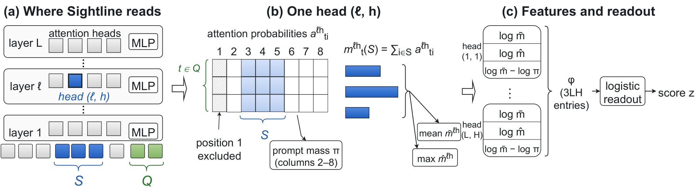

Mechanizes all thirteen theoretical results on attention-based data-flow soundness in transformers in Lean 4 with Mathlib (2,266 lines, 12 modules, no sorry).
Abstract
Programs increasingly call large language models (LLMs), filling prompt placeholders with program values and consuming the output. Such a call crosses the boundary between natural language and programming language (NL/PL). To follow data across it, an analysis needs a data-flow summary of which placeholders the output uses, but no code describes what the model does. Analyses of these LLM-integrated applications therefore taint every output with every input, creating spurious flows, or ask a second model to label each call, which is costly. We prove, and mechanize in Lean 4, that a placeholder flows to the output of a transformer, to first order, only through the attention that reads it (no reading, no flow), and that a faint reading or sensitivity cannot certify that a placeholder does not flow. Unlike reading, the log-probability gradients and Fisher signals of existing methods vanish on confident outputs, and single-span removal fails on duplicated content. Our tool, Sightline, reads a recorded call in one forward pass, learns from labels which reads are uses, and calibrates the pruning to miss at most a chosen fraction $α$ of true flows, on average over call sites, when deployment is exchangeable with calibration. On 2,103 unseen repository families and four models, Sightline is the most accurate summary against the seven closest methods and a hidden-state probe. Calibrated at $α$ = 1%, it misses about 1% of true flows and prunes 43.9-65.6% of spurious flows, 1.6 to 2.6 times as many as the best baseline, and still 43.8-60.1% when calibrated on another collection. Through an open surrogate, it reads models treated as closed about as accurately as they read themselves, without their labels. In the information-flow control of an LLM agent, it removes about half of the labels from inputs that do not flow.
Problem
Program analyses such as taint tracking and information-flow control need data-flow summaries of LLM calls, saying which prompt placeholders the output uses. No code describes the model's computation, so current analyses either taint every output with every input or pay for a second model to label each call.
Approach
The authors prove four properties of attention 'reading' and mechanize them in Lean 4 with Mathlib. Reading soundly bounds first-order local flow, a faint reading cannot certify non-flow, calibration gives a statistical guarantee, and gradient, Fisher and removal signals collapse on confident outputs or duplicated content. The tool Sightline uses these properties: it records per-head reading masses from one teacher-forced forward pass, scores each placeholder with a learned readout, and calibrates the pruning threshold per call site to miss at most an α fraction of true flows. The Lean development has 89 theorems in 2,266 lines and depends only on the standard axioms.

Figure 3. Where Sightline reads in one teacher-forced forward pass (a), the three statistics of one head (b), and the feature vector with the readout (c), as defined in Equation 4 and Equation 5 . Three panels showing which positions the output reads in a forward pass, the three statistics of one head, and the feature vector that the readout takes.
Results
On 2,103 unseen repository families and four models, Sightline is more accurate than seven baselines and a hidden-state probe. Calibrated at α=1%, it misses about 1% of true flows and prunes 43.9–65.6% of spurious flows, 1.6 to 2.6 times as many as the best baseline. In information-flow control of an LLM agent, it removes about half of the label creep.
Method
Qwen
Granite
Gemma
Nemotron
Sightline
86.0
84.1
86.7
81.1
Replacement
80.2
79.6
80.5
78.7
LOO
77.5
77.5
78.8
75.2
GIF (next token)
50.5
50.2
47.0
61.3
Accuracy (Macro-F1) of data-flow summaries on the new batch (selected methods)